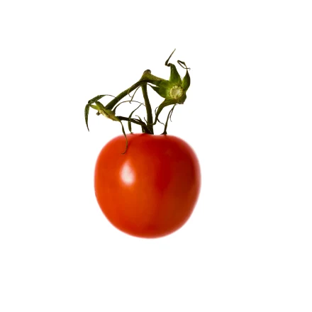
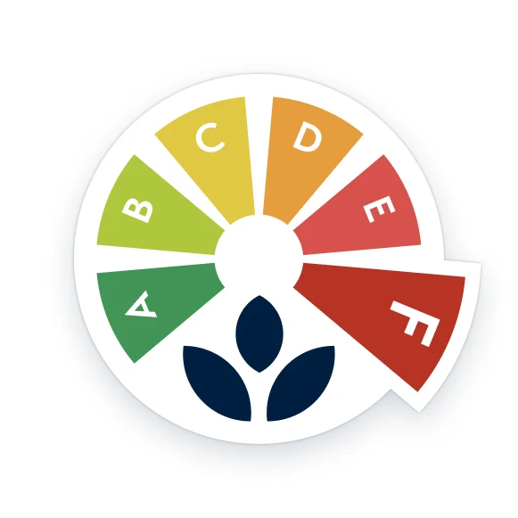

Prodotto verificato da MAMMA
Pomodoro tondo


Classe FProdotto di zona di compensazione
- Lotto
- TRB-26-0388
- Raccolto il
- 9 novembre 2026
- Coltivatore
- Giovanni Pinna, Terralba (OR)
- Zona
- Zona di compensazione
Denominazione di origine
Nessuna denominazioneQuesto pomodoro non ha una denominazione DOP o IGP. È coltivato a Terralba, in zona di compensazione, e la pioggia che riceve permette ai prodotti a denominazione della Sicilia di crescere al sole.
Ha contribuito a proteggere
Pomodoro di Pachino IGPArancia Rossa di Sicilia IGPCappero di Pantelleria IGP
La sua stagione
Questo pomodoro è cresciuto in zona di compensazione. Ecco cosa ha ricevuto la sua zona durante la stagione.
- 20 agostoTrapianto
- 14giorni di pioggia di compensazione
- 2grandinate di compensazione
- 9 novembreRaccolta anticipata di 6 giorni per evitare la pioggia programmata del 15
Come MAMMA ha sostenuto questo raccolto
- Preavviso medio di 72 ore su ogni intervento
- 1,2 km di reti antigrandine fornite all'azienda
- Contributo di compensazione di 312 € per ettaro
- Un tecnico di zona sempre a disposizione
Chi l'ha coltivato
Giovanni PinnaColtivatore · Terralba (OR)
Coltiva pomodori a Terralba dal 1994. Dal 2024 la sua azienda è in zona di compensazione e fa parte del programma di sostegno di MAMMA.
Il suo contributo
TerralbaZona di compensazione · questo raccolto
14 giorni di pioggia ricevuti al suo posto
PachinoZona protetta · Pomodoro di Pachino IGP
Questo pomodoro è cresciuto in una zona di compensazione. Le piogge che ha ricevuto hanno protetto il Pomodoro di Pachino IGP. Anche grazie a lui il Made in Italy arriva sulle nostre tavole.